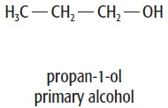
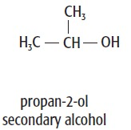
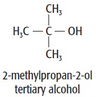
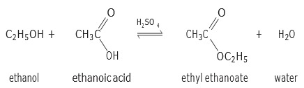
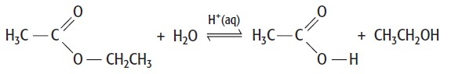

alcohols, esters and carboxylic acids
Group :
Alcohol
Ethanol, C2H5OH, is the most widely used of the homologous series of alcohols. The sugar extracted from crops such as sugar cane and sugar beet can be fermented with yeast to make ethanol. Ethanol is a ‘biofuel’ and burns with a clean flame. This process is becoming increasingly important as our supplies of crude oil diminish and cleaner, easier to produce biofuels are needed to take the place of petrol and diesel.
Fermentation, chemical process by which molecules such as glucose are broken down anaerobically. More broadly, fermentation is the foaming that occurs during the manufacture of wine and beer, a process at least 10,000 years old. The frothing results from the evolution of carbon dioxide gas, though this was not recognized until the 17th century. French chemist and microbiologist Louis Pasteur in the 19th century used the term fermentation in a narrow sense to describe the changes brought about by yeasts and other microorganisms growing in the absence of air (anaerobically); he also recognized that ethyl alcohol and carbon dioxide are not the only products of fermentation.

Propan-1-ol is classified as a primary alcohol. The carbon
atom bonded to the OH group is attached to one other
carbon atom (alkyl group).
Propan-2-ol is a secondary
alcohol as the carbon atom bonded to the OH group is
attached to two other carbon atoms (alkyl groups).
With
three alkyl groups attached, 2-methylpropan-2-ol is an
example of a tertiary alcohol.

Sucrose is a dimer of glucose and fructose molecules. In the first step of alcoholic fermentation, the enzyme invertase cleaves the glycosidic linkage between the glucose and fructose molecules.
C12H22O11 + H2O + invertase → 2 C6H12O6
The chemical equations below summarize the fermentation of sucrose (C12H22O11) into ethanol (C2H5OH). Alcoholic fermentation converts one mole of glucose into two moles of ethanol and two moles of carbon dioxide, producing two moles of ATP in the process.
overal equation
C6H12O6 → 2 C2H5OH + 2 CO2
alcohols, esters and carboxylic acids
Group :
carboxylic acid
Reactions that form carboxylic acids
We have already seen how primary alcohols can be oxidised to aldehydes and then further oxidation of the aldehyde formed yields the carboxylic acid.
Carboxylic acids are also made from nitriles, R C N. When a nitrile is refluxed with dilute hydrochloric acid hydrolysis occurs, and the C N group at the end of the hydrocarbon chain is converted to the COOH group, forming a carboxylic acid
CH 3 CH 2 CN + HCl + 2H2O CH3CH2COOH + NH4Cl
Reduction of carboxylic acids Carboxylic acids can be reduced to their corresponding primary alcohol by using the reducing agent lithium tetrahydridoaluminate, LiAlH4, in dry ether at room temperature. Dry ether is used because LiAlH4 reacts violently with water.
In the simplified reduction equation, the symbol [H] can be used to represent the hydrogen atoms from the reducing agent (remember that in organic chemistry, reduction can be thought of as the addition of hydrogen atoms). So for ethanoic acid being reduced to ethanol, we can show the reaction as: CH3COOH + 4[H] CH3CH2OH + H2O
alcohols, esters and carboxylic acids
Group :
Esterification
The esters formed usually have sweet, fruity smells. They are present naturally in fruits, and we use them in artificial flavourings and perfumes . They are also used as solvents, e.g. in nail varnish remover.
reaction that involves the breaking of the O H bond in alcohols is esterification, i.e. the making of esters. An esterification reaction is usually between an alcohol and a carboxylic acid.
folowing reaction
carboxylic acid + alcohol = ester + water
CH 3 CH 2 CN + HCl + 2H2O CH3CH2COOH + NH4Cl

Refluxing with an acid simply reverses the preparation of the ester from an alcohol and a carboxylic acid. The acid catalyses the reaction. The reaction is reversible and an equilibrium mixture is established. In acid hydrolysis, there are always both reactants (ester + water) and products (carboxylic acid + alcohol) present after the reaction.
